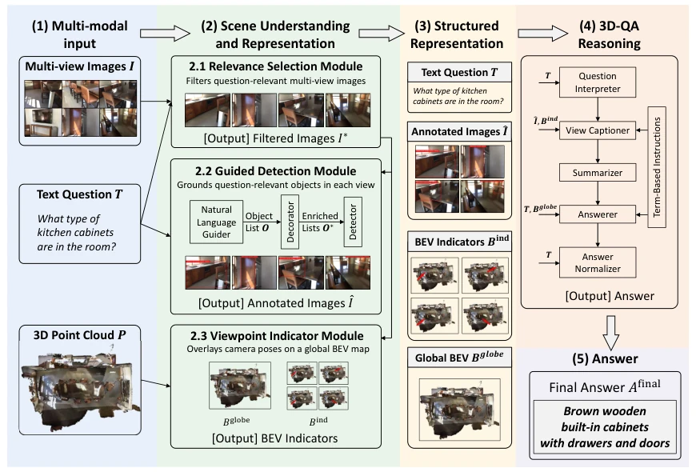

这篇论文给“训练自由”贴了个金身，本质是 Prompt Engineering 的集大成者。ViewMind3D 把 3D 问答拆解成四步，不用微调就能跑，确实省了显卡钱。不过，它依赖 GPT-4.1 和 o3 这种巨无霸模型，推理成本怕是比训练还贵。而且“训练-free”只是没更新参数，全靠大模型自带知识硬扛，泛化到未见环境时，一旦场景太偏，大模型幻觉可能比微调模型还凶。优点是解释性强，缺点是计算开销大，属于“用算力换精度”的典型。此外，其 BEV 编码方案对方向描述的选择并不敏感，说明空间推理的鲁棒性仍有提升空间，不能指望一个框架解决所有 3D 理解难题。
This paper bestows a golden status upon 'training-free'. Essentially, it is the culmination of Prompt Engineering. ViewMind3D decomposes 3D QA into four steps, runs without fine-tuning, indeed saving GPU costs. However, it relies on behemoth models such as GPT-4.1 and o3, inference costs may even exceed training costs. Moreover, 'training-free' merely means no parameter updates, relying entirely on the large model's inherent knowledge to shoulder the burden. When generalizing to unseen environments, if the scene is too niche, large model hallucinations may be more severe than those of fine-tuned models. The advantage is interpretability, the disadvantage is high computational overhead, typical of 'trading compute for accuracy'. Additionally, its BEV encoding scheme is not sensitive to the choice of direction description. This indicates that the robustness of spatial reasoning still has room for improvement; one cannot expect a single framework to solve all 3D understanding challenges.
研究动机Motivation
具身 AI 需要理解 3D 空间，但现有 3D-QA 方法大多依赖昂贵的 3D 标注和特定任务微调 [1]–[3]，导致扩展性差。虽然 VLM 通用性强，但缺乏显式 3D 推理机制。ScanQA [5] 和 SQA3D [6] 等基准测试了复杂室内场景，但现有方法在 zero-shot 设置下性能下降明显。研究者想问：通用 2D VLM 能否在不重训的情况下做 3D 推理？现有工作如 Scene-LLM [8] 依赖大规模预训练，GPT4Scene [9] 在纯训练-free 下效果有限。此外，Chat-Scene [10] 等方法依赖学习到的对象表示，降低了可解释性。因此，需要一种无需微调且模块化的解决方案。
Embodied AI requires understanding 3D space, but existing 3D-QA methods mostly rely on expensive 3D annotations and task-specific fine-tuning [1]–[3], leading to poor scalability. Although VLMs are highly general, they lack explicit 3D reasoning mechanisms. Benchmarks such as ScanQA [5] and SQA3D [6] test complex indoor scenes, but existing methods show significant performance degradation under zero-shot settings. Researchers ask: Can general 2D VLMs perform 3D reasoning without retraining? Existing work such as Scene-LLM [8] relies on large-scale pre-training, GPT4Scene [9] has limited effectiveness under pure training-free settings. Additionally, methods such as Chat-Scene [10] rely on learned object representations, reducing interpretability. Therefore, a fine-tuning-free and modular solution is needed.
The framework is divided into four steps: 1. Relevant view selection, filtering redundant views; 2. Guided detection, using language prompts for objects and locating with Florence-2; 3. Viewpoint indicator, encoding camera pose as BEV representation; 4. 3D-QA module, fusing visual, spatial, and language clues to generate answers. The core innovation lies in structured decomposition, not relying on 3D reconstruction, but sharing spatial reference through BEV. Each module is independent, supporting different LLM/VLM combinations. Specifically, the view selection module adopts a query-adaptive strategy, prioritizing recall retention. The guided detection module extracts object categories via a language guide, then enhances attributes via a decorator, and finally generates bounding boxes via a detector. The viewpoint indicator projects camera pose to the global BEV plane, providing shared spatial reference. The 3D-QA module completes reasoning through five sub-stages: question interpretation, view description, cross-view summary, answer synthesis, and standardization. This design allows the system to handle multi-view inputs without parameter updates, achieving decoupling of perception and reasoning.
Tested on ScanQA and SQA3D. Compared to fine-tuning methods such as 3D-LLM [1], ViewMind3D achieves a CIDEr of 73.4 on ScanQA and 50.8% accuracy on SQA3D. Ablation studies show the viewpoint indicator helps with spatial disambiguation, but guided detection may lead to performance degradation on 'How' type questions due to detection noise. Computationally, the main overhead is in the QA module, approximately 90K tokens. Further analysis finds the BEV direction encoding scheme (compass vs. clock) has little impact on performance, indicating the model is insensitive to spatial description granularity. Additionally, Role Decomposition (Role Decomposition) significantly improved CIDEr scores compared to the single-agent baseline, proving the effectiveness of modular reasoning. Overall, this method achieves performance comparable to fine-tuned models under zero-shot settings, validating the feasibility of structured orchestration.
其他图片Other Figures

Fig. 1. Overview of the ViewMind3D framework for 3D-QA. Given a natural language query, multi-view images, and a 3D point cloud, the system performs scene understanding and organizes the outputs into a structured representation that bridges perception and reasoning. This representation is then processed through four stages. The example illustrates how the query is grounded in multi-view visual evidence and resolved via structured spatial reasoning.